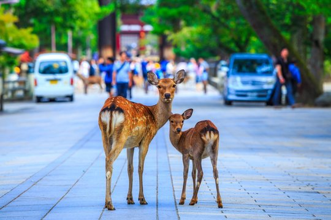

Kyoto / Nara
Kyoto and Nara have a traditional Japanese atmosphere with historic temples, shrines, and old streets. $100 from Tokyo with 🚅Bullet Train

Kyoto
- 🚶♀️ Philosopher’s Path – Take a peaceful walk along cherry blossom-lined canals🌸(Only during April)
- 🖌️ Calligraphy – Try your hand at traditional Japanese calligraphy
- ⛩️ Fushimi Inari – Hike through thousands of red torii gates Lern more
- 🧧 Omamori – Collect lucky charms from different shrines and temples

🦌 Nara 🦌....
- 🦌 Deer Everywhere – Spot friendly deer even on the streets and in parks
- 🍘 Shika Senbei – Feed the sacred deer special crackers (but watch out—they bow!)
- 🕌 Tōdai-ji – Visit the Great Buddha inside one of Japan’s largest wooden buildings
- 🎐 Old Town – Wander through Naramachi, a quiet district with old merchant houses
| Activity / Item | Price (Per Couple) | Where |
|---|---|---|
| 🚆 Train Ride (Kyoto to Nara) | ~$8–$10 | JR Nara Line or Kintetsu Line |
| 👘 Kimono Rental | ~$60–$90 | Gion, Kyoto Station area |
| ⛩️ Fushimi Inari Hike (Free) | $0 | Fushimi Inari Taisha, Kyoto |
| 🍘 Shika Senbei (Deer Crackers) | ~$2–$3 | Nara Park |
| 🍱 Dinner at Traditional Kyoto Restaurant | ~$40–$100 | Pontocho Alley, Gion |
| 🛏️ Ryokan Stay (Traditional Inn) | ~$150–$300 | Central Kyoto or Arashiyama |
| 🖌️ Calligraphy Experience | ~$40–$70 | Workshops near Kyoto Station |